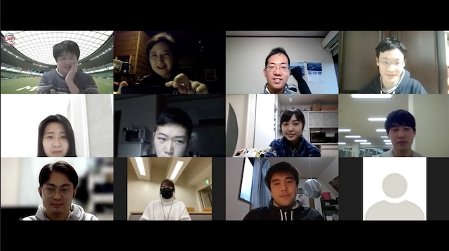

【法律学部】
〜国際関係法学科〜
大藤紀子ゼミ

比較憲法というタイトルのゼミですが、外国の憲法や明治憲法との比較を交えた、古今東西の幅広い論点について、自由に楽しく議論を交わしています。
時事問題も扱い、文章読解では、著者の意見を要約するといった作業をします。憲法学は、正直「答えのない」（一つに収斂しない）問題であったりと、難しいことが多いです。
しかし、文章をまとめる、自分の意見を聞き手に分かるように伝えるといった練習の場としても、このゼミは役立っています。
このゼミに参加すれば、勉強がもっと好きになること間違いなしです。
Mail